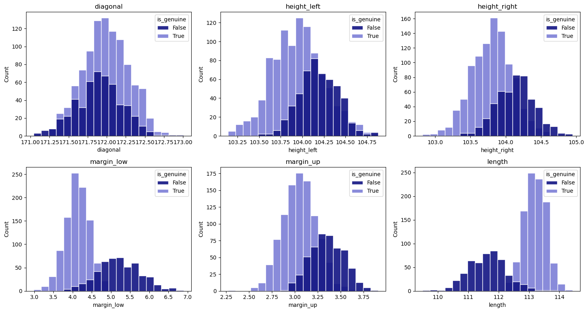
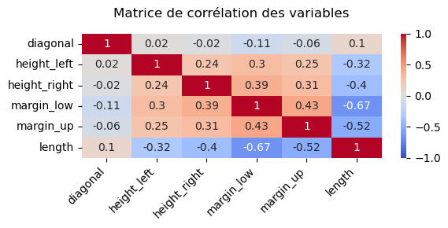
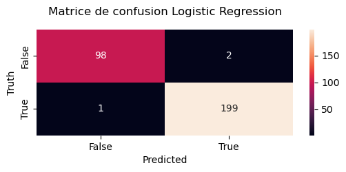
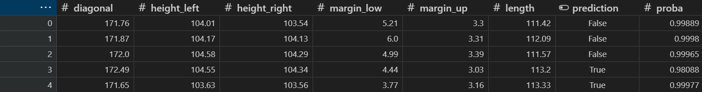

- 99 %d'accuracy sur le jeu de test
- 3erreurs sur 300 billets testés
- 1 500billets dans le jeu d'apprentissage
01 Contexte & besoin métier
L'ONCFM contrôle l'authenticité des billets en circulation. Ce contrôle repose aujourd'hui sur l'expertise humaine : un agent examine le billet et tranche.
Cette méthode est fiable mais lente, difficile à passer à l'échelle, et sa qualité dépend de l'expérience de l'agent. La question posée était volontairement ouverte : un algorithme peut-il distinguer un vrai d'un faux billet à partir des seules dimensions géométriques, et si oui, à quel niveau de confiance ?
L'objectif est d'aider l'agent avec un pré-tri : le modèle traite les cas évidents, et l'agent se concentre sur les cas douteux. Il fallait donc un outil qu'une équipe non technique puisse utiliser.
02 Données
Un fichier unique de 1 500 billets, dont l'authenticité est connue : 1 000 vrais et 500 faux. Chaque billet est décrit par six mesures géométriques en millimètres : longueur de la diagonale, hauteur à gauche, hauteur à droite, marge inférieure, marge supérieure et longueur.
Qualité et limites
- 37 valeurs manquantes, toutes concentrées sur la marge inférieure. Aucune autre colonne n'est incomplète.
- Jeu propre et homogène : c'est la principale limite. Ces billets sont des contrefaçons de laboratoire, pas nécessairement représentatives de ce qui circule réellement.
03 Démarche
-
Reconstituer les 37 valeurs manquantes plutôt que les écarter
Les valeurs absentes de la marge inférieure ont été estimées par régression linéaire, en utilisant les cinq autres mesures comme variables explicatives. Le modèle est entraîné sur les billets complets, puis appliqué aux billets incomplets.
Pourquoi ce choix
Supprimer 37 lignes revenait à perdre 2,5 % du jeu : supportable en volume, mais rien ne garantissait que ces absences soient réparties au hasard entre vrais et faux billets. Les écarter aurait pu introduire un biais silencieux.
-
Repérer les mesures qui distinguent vrais et faux billets
Une matrice de corrélation, puis la distribution de chaque mesure pour les vrais et les faux billets. Ce second graphique montre le mieux quelles mesures séparent les deux groupes.


-
Découper puis standardiser, dans cet ordre
Les billets sont répartis en deux jeux : 80 % pour entraîner le modèle, 20 % pour le tester, en gardant la même proportion de vrais et de faux dans chacun. Les mesures sont ensuite mises à la même échelle.
Pourquoi ce choix
Garder la même proportion (2 vrais pour 1 faux) dans les deux jeux permet de tester le modèle dans des conditions réalistes.
La mise à l'échelle est calculée sur le jeu d'entraînement seulement, puis appliquée au jeu de test. Sinon, le modèle aurait déjà « vu » une partie des données de test, et son score aurait été trop optimiste (on parle de fuite de données).
-
Tester l'approche non supervisée, puis l'écarter
Avant de recourir à l'apprentissage supervisé, une réduction en composantes principales suivie d'un partitionnement en deux groupes a été évaluée. Le score de silhouette obtenu est de 0,34.
Pourquoi ce choix
Un score de silhouette de 0,34 montre des groupes peu séparés. Surtout, cette méthode forme des groupes sans savoir lequel contient les faux billets, alors qu'on dispose déjà de cette information pour 1 500 billets.
-
Comparer trois modèles supervisés
Régression logistique, forêt aléatoire de cent arbres et méthode des plus proches voisins (k = 5) ont été entraînés sur le même découpage et comparés sur le jeu de test. Les deux premiers atteignent 99 % d'accuracy, le troisième 98 %.
Pourquoi ce choix
À performance équivalente, la régression logistique a été retenue contre la forêt aléatoire. Elle est directement interprétable (on peut expliquer à un agent de contrôle quelles mesures pèsent dans la décision et dans quel sens), et elle produit un modèle léger, rapide et stable à mettre en production. La forêt aléatoire, plus difficile à expliquer, n'était pas plus précise.
-
Interroger le seuil de décision
Le modèle ne renvoie pas une classe mais une probabilité. Le seuil par défaut de 0,5 a été confronté à deux alternatives, 0,3 et 0,8, en comparant les matrices de confusion obtenues.
Pourquoi ce choix
Les deux erreurs n'ont pas le même coût. Rejeter à tort un vrai billet entraîne une vérification manuelle. Laisser passer un faux billet est beaucoup plus grave. Changer le seuil permet de choisir quel risque réduire : c'est au commanditaire de le fixer.
-
Industrialiser
Le modèle et sa mise à l'échelle ont été enregistrés ensemble dans un seul fichier (.pkl). Un second script lit ce fichier, analyse une liste de billets et produit un fichier Excel avec, pour chaque billet, sa prédiction et sa probabilité.
Pourquoi ce choix
Enregistrer le modèle sans sa mise à l'échelle aurait donné de mauvaises prédictions sur les nouveaux billets : c'est pourquoi les deux sont enregistrés ensemble.
Le fichier indique aussi la probabilité, pas seulement la réponse vrai ou faux : un billet jugé faux à 51 % et un autre à 99,9 % ne se traitent pas de la même façon.
04 Résultats & impact
Le modèle classe correctement 297 des 300 billets du jeu de test, avec une précision et un rappel de 0,99.

La longueur du billet ressort comme la mesure la plus discriminante, ce que la figure 1 laissait déjà voir. La décision du modèle repose donc surtout sur un critère simple, qu'un agent peut comprendre et vérifier.
Ce que le livrable permet concrètement

Recommandations
- Utiliser le modèle pour un pré-tri, la décision finale restant à l'agent. Le modèle traite les billets classés avec une probabilité élevée et envoie les cas incertains à un agent.
- Faire fixer le seuil par le métier. Choisir entre laisser passer plus de faux billets ou faire plus de vérifications relève de la politique de contrôle de l'organisme.
- Tracer les cas douteux. Les billets proches du seuil constituent le meilleur jeu d'entraînement pour la version suivante.
05 Limites & prochaines pistes
Le jeu de données est propre et modeste. 1 500 billets homogènes ne représentent pas la diversité des contrefaçons réelles. Un faussaire qui connaîtrait les dimensions exactes d'un vrai billet produirait des faux que ce modèle ne verrait pas : il n'observe que la géométrie, pas le papier, l'encre ou les sécurités.
Le score de 99 % n'est pas garanti en conditions réelles. Il a été mesuré sur des billets de la même source que ceux de l'entraînement. La performance réelle ne sera connue qu'après un test sur des billets saisis sur le terrain.
Prochaines pistes
- Valider sur un échantillon de contrefaçons réelles, plus variées, avant tout déploiement.
- Enrichir avec des variables non géométriques (spectrométrie, détection UV) pour couvrir les contrefaçons de meilleure facture.
- Mettre en place un suivi de la dérive : si la distribution des mesures entrantes s'éloigne de celle de l'apprentissage, le modèle doit être réentraîné.
- Formaliser la procédure de réentraînement pour que l'équipe métier puisse la déclencher sans intervention externe.